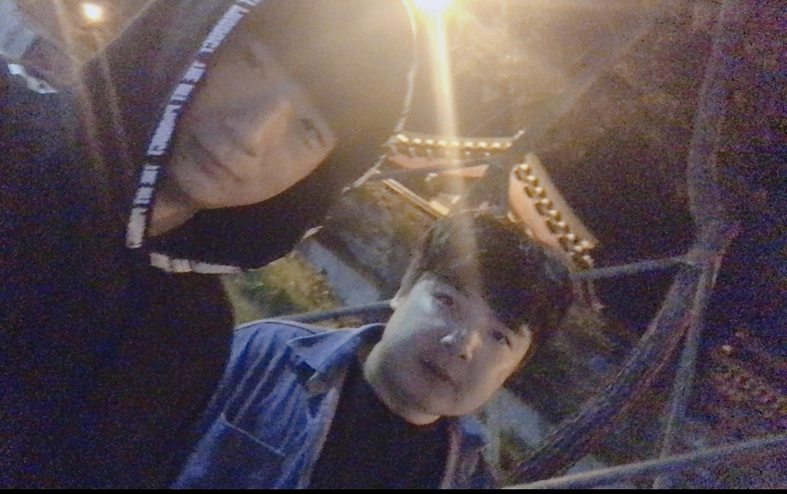

대망의 인물 필리핀추종자

드디어 올것이 오고야 말았다.
이름하여
필리핀추종자
이름은 강제성 국적은 불분명하며필리핀에 굉장한 애정을 들어내고 있는 위험한 인물이며
필리핀에 애정이있는
이유 근거 논리따위는 무시하는 아주 악질중의 악질인 무시무시한 놈이라고 할수있다.
현재는 새벽에 편의점 알바를 하며 신분위장을 하고 있으나 언제 정체를 들어낼지 모르는
요주의 인물이라고 할수있다.
앞서말한 휘바와 같이 있는걸로 보아 저사진을 찍은 당일
무시무시한 일이 일어났을
확률이 매우 높다고 할수있다.
특징은 필리핀여자에 굉장한 애정이 있다.